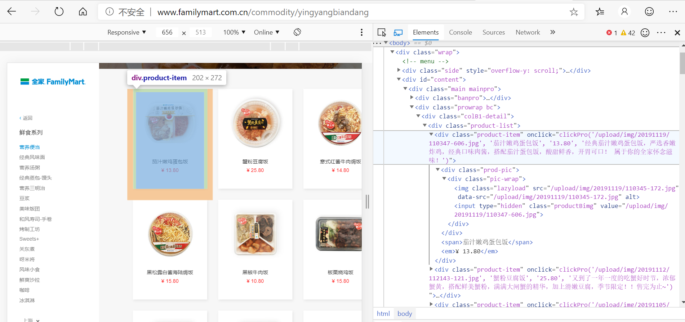
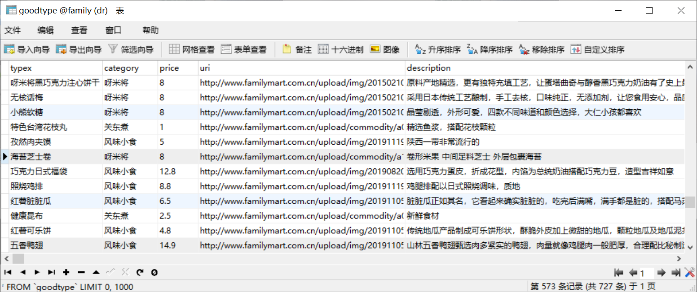

bs4爬虫实战:全家Family网站攻略¶
Beautiful Soup 是一个可以从HTML或XML文件中提取数据的Python库. 它能够通过你喜欢的转换器实现惯用的文档导航,查找,修改文档的方式. 它会帮你节省数小时甚至数天的工作时间.
本篇日志记载我爬取 全家Family网站 上所有商品数据的过程。
观察网页源码¶
浏览器F12打开控制台¶
逐个展开elements，找到我们所需要爬取的内容对应的div标签，仔细观察它的结构
<body>
<div class="wrap">
<div id="content">
<div class="main mainpro">
<div class="banpro">
<img width="100%" src="/static/common/img/ftc/xxtv-banner/yybd-banner.jpg">
<div class="banpro-box-md">
<p>营养便当</p>
</div>
</div>
<div class="prowrap bc">
<div class="colB1-detail">
<div class="product-list">
<div class="product-item" onclick="clickPro('/upload/img/20191119/110347-606.jpg', '茄汁嫩鸡蛋包饭', '13.80', '经典茄汁嫩鸡蛋包饭，严选香嫩炸鸡，经典口味肉酱，搭配茄汁蛋包饭，酸甜鲜香，开胃可口！ 属于你的全家怀念滋味！')">
<div class="prod-pic">
<div class="pic-wrap">
<img class="lazyload" src="/upload/img/20191119/110345-172.jpg" data-src="/upload/img/20191119/110345-172.jpg" alt="">
<input type="hidden" class="productBimg" value="/upload/img/20191119/110347-606.jpg">
</div>
</div>
<span>茄汁嫩鸡蛋包饭</span>
<em>¥ 13.80</em>
</div>
<div class="product-item" onclick="clickPro('/upload/img/20191112/112143-121.jpg', '蟹粉豆腐饭', '25.80', '又到了一年一度的吃蟹好时节，浓郁蟹黄，搭配鲜美蟹粉，满满大闸蟹的精华，加上滑嫩豆腐，季节限定！！售完为止~')">
<div class="prod-pic">
<div class="pic-wrap">
<img class="lazyload" src="/upload/img/20191112/112141-545.jpg" data-src="/upload/img/20191112/112141-545.jpg" alt="">
<input type="hidden" class="productBimg" value="/upload/img/20191112/112143-121.jpg">
</div>
</div>
<span>蟹粉豆腐饭</span>
<em>¥ 25.80</em>
</div>
#以下省略----依次类推...........
requests获取网页源码¶
import requests
from bs4 import BeautifulSoup
import sys
#requests获取源码
response = requests.get("http://www.familymart.com.cn/commodity/yingyangbiandang")
#转换为文本
page = response.text
#获取系统编码方式
print(sys.getdefaultencoding()) #若为utf-8
#源码的编码方式
print(response.encoding) #若为ISO-8859-1
#如果编码不一致 则须转换编码方式
#page = page.encode("ISO-8859-1").decode("utf-8")
print(page)
输出html源码，即表示第一步成功
定位至对应标签获取数据¶
尝试获取并输出¶
#beautifulsoup 解析网页文件
soup = BeautifulSoup(page, features='html.parser')
#根据 id 定位
target = soup.find(id = 'content')
#根据 标签名 定位
alist = target.find_all(name = 'img')
blist = target.find_all(name = 'span')
clist = target.find_all(name = 'em')
#根据 class 定位
dlist = target.find_all(class_="product-item")
#试着输出
print(str(alist[1]))
print(str(blist[0]))
print(str(clist[0]))
print(str(dlist[1]))
查看输出的结果：
<img alt=”” class=”lazyload” data-src=”/upload/img/20191119/110345-172.jpg” src=”data:image/gif;base64,R0lGODdhAQABAPAAAMPDwwAAACwAAAAAAQABAAACAkQBADs=”/>
<span>茄汁嫩鸡蛋包饭</span>
<em>¥ 13.80</em>
<div class=”product-item” onclick=”clickPro(‘/upload/img/20191119/110347-606.jpg’, ‘茄汁嫩鸡蛋包饭’, ‘13.80’, ‘经典茄汁嫩鸡蛋包 饭，严选香嫩炸鸡，经典口味肉酱，搭配茄汁蛋包饭，酸甜鲜香，开胃可口！ 属于你的全家怀念滋味！’)”> …… </div>
对字符串进行处理后塞进数组¶
url=[] #存放图片URI
price=[] #存放商品价格
name=[] #存放商品名称
descp=[] #存放商品描述
#利用 .attrs.get()获取标签内属性
for i in alist:
#源码中为相对路径，所以这里将URI补全
aimage = "http://www.familymart.com.cn"+ str(i.attrs.get('data-src'))
a=str(aimage)
url.append(a)
for i in blist:
a=str(i)[6:-7]
name.append(a)
for i in clist:
a=str(i)[6:-5]
price.append(a)
for i in dlist:
s=str(i.attrs.get('onclick'))
#这里将字符串逗号分割后取其中第四段---商品描述
m=s.split(',')
#发现该网页源码中有乱码 ，采用replace去除
descp.append(str(m[3])[2:-2].replace('',''))
#尝试输出
for i in range(0,len(name)):
print(str(i)+" "+name[i]+" "+price[i]+" "+url[i+1]+" "+descp[i])
查看美丽的结果：
0 茄汁嫩鸡蛋包饭 13.80 http://www.familymart.com.cn/upload/img/20191119/110345-172.jpg 经典茄汁嫩鸡蛋包饭，严选香嫩炸鸡，经典口 味肉酱，搭配茄汁蛋包饭，酸甜鲜香，开胃可口！ 属于你的全家怀念滋味！
1 蟹粉豆腐饭 25.80 http://www.familymart.com.cn/upload/img/20191112/112141-545.jpg 又到了一年一度的吃蟹好时节，浓郁蟹黄，搭配鲜 美蟹粉，满满大闸蟹的精华，加上滑嫩豆腐，季节限定！！售完为止~
2 意式红酱牛肉焗饭 14.80 http://www.familymart.com.cn/upload/img/20191105/113131-591.jpg 高价值感焗饭，以意式红酱的基底，加上烤 牛肉，佐以香甜烤南瓜、菌菇，最后加上大量芝士，焗烤过后香气四溢，秋冬爆款打造！
{kind=link}
{kind=link}
{kind=link}
完善网站多页的爬取¶
全家Family网站的商品有很多种类，每种一个网页，只需要循环爬取即可。
start="http://www.familymart.com.cn/commodity/"
path=["yingyangbiandang","jingdianfengweimian","yingyangtangzhou","jingdianzhengbao_mantou","yingyangsanmingzhi","riguangdoujiang","meiweifantuan","hefengshousi_shoujuan","kaojiugongfang","sweets","guandongzhubenpu","yamijiang","fengweixiaoshi","xianshuangshala","baikecoffee","icecream"]
cate=["营养便当","经典风味面","营养汤粥","经典蒸包-馒头","营养三明治","豆浆","美味饭团","和风寿司-手卷","烤制工坊","甜品","关东煮","呀米将","风味小食","鲜爽沙拉","咖啡","冰淇淋"]
leng=len(path)
for j in range(0,leng):
response = requests.get(start+path[j])
#...........
将结果爬到后台数据库里¶
有多种办法，比如将结果输出成文件等等
这里我采用直接在python内发请求解决的方式
首先我在springboot后端撰写添加商品的API¶
这里贴出代码只是示意，每个人有每个人的实现方式
@RestController
@CrossOrigin
@RequestMapping("/goodtype")
public class GoodtypeController {
@Autowired
GoodtypeService goodtypeService;
@PostMapping("/add")
public Response add(@RequestParam String type,@RequestParam String category,@RequestParam double price,@RequestParam String url,@RequestParam String desc){
try{
Goodtype x=new Goodtype();
x.setType(type);
x.setCategory(category);
x.setPrice(price);
x.setUri(url);
x.setDescription(desc);
goodtypeService.addnew(x);
return genSuccessResult();
}catch (Exception e){
return genFailResult("添加失败");
}
}
}
在Python内多线程并发post请求¶
在这里踩了一次异步的坑，一开始没高兴写多线程，觉得慢点就慢点吧，结果爆炸了
- 原因是：
在内层post是异步的，程序没有等待post的执行结束就开始爬取下一页的内容， 导致数据数组的内容在使用前就被更新，从而出现访问越界问题
import threading,time
#每个线程的执行函数
def run(a,b,c,d,e):
path="http://47.100.107.158:80/goodtype/add?"+"type="+a+"&price="+b+"&url="+c+"&category="+d+"&desc="+e
requests.post(path)
time.sleep(2)
#线程池
pool=[]
start="http://www.familymart.com.cn/commodity/"
path=["yingyangbiandang","jingdianfengweimian","yingyangtangzhou","jingdianzhengbao_mantou","yingyangsanmingzhi","riguangdoujiang","meiweifantuan","hefengshousi_shoujuan","kaojiugongfang","sweets","guandongzhubenpu","yamijiang","fengweixiaoshi","xianshuangshala","baikecoffee","icecream"]
cate=["营养便当","经典风味面","营养汤粥","经典蒸包-馒头","营养三明治","豆浆","美味饭团","和风寿司-手卷","烤制工坊","甜品","关东煮","呀米将","风味小食","鲜爽沙拉","咖啡","冰淇淋"]
for j in range(0,leng):
response = requests.get(start+path[j])
#...................
#...................
#...................
for i in range(0,len(name)):
print(str(i)+" "+name[i]+" "+price[i]+" "+url[i+1]+" "+descp[i])
#新开一个线程加入线程池中
pool.append(threading.Thread(target=run,args=(name[i],price[i],url[i+1],cate[j],descp[i])))
#多线程
for i in pool:
i.start()
for i in pool:
i.join()
大功告成¶
爽！！！！！！！！！！！！
